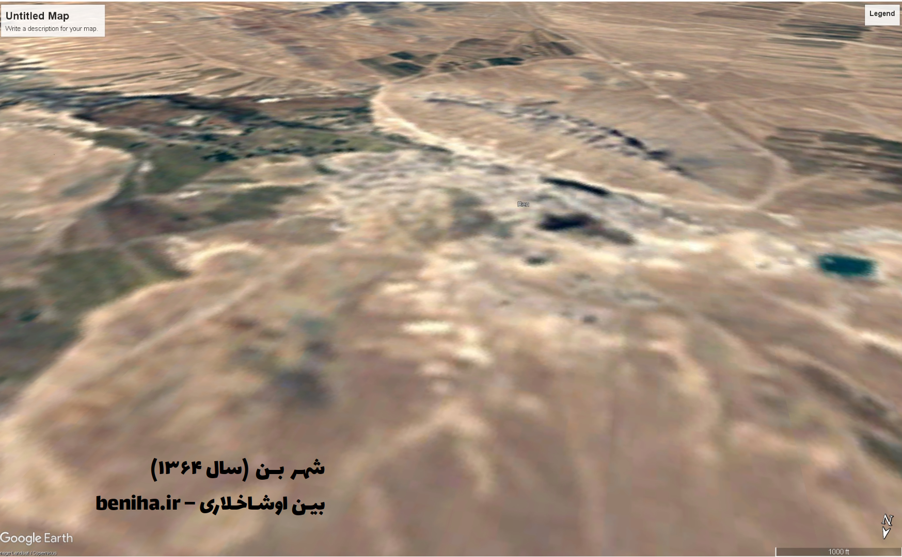
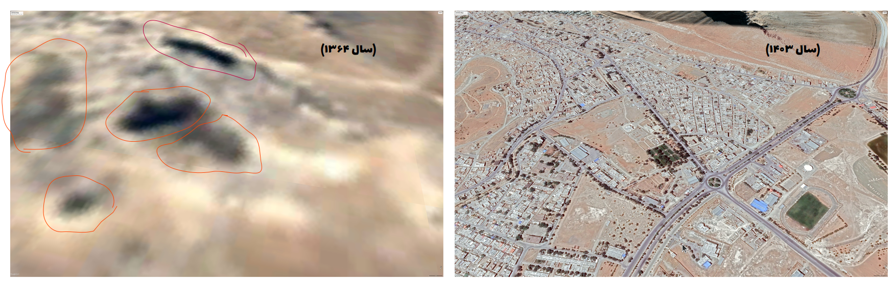
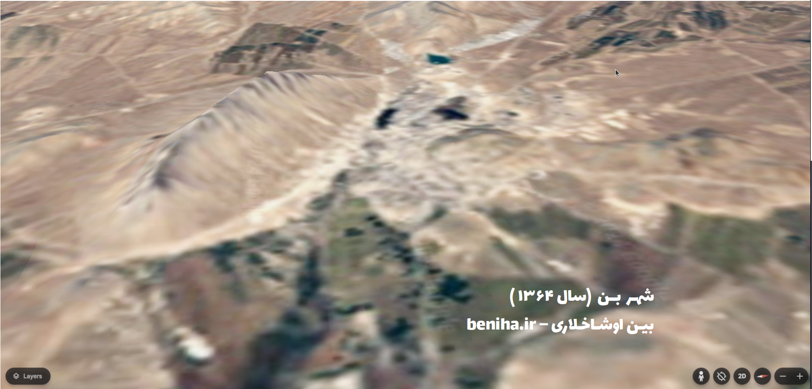
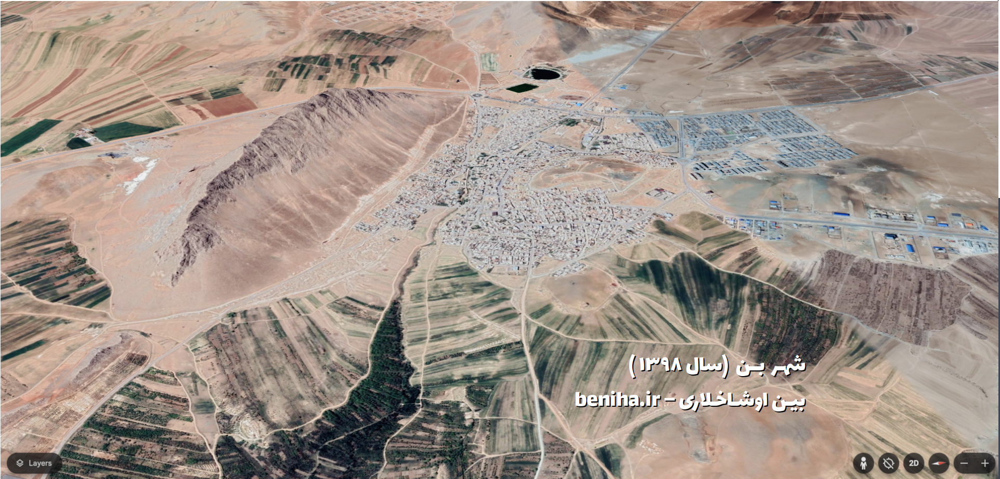

نقشه های قدیمی گوگل. بن و کبودالار
به تازگی، شرکت گوگل خدمت جدیدی با عنوان تصاویر تاریخی [۱] به قابلیت های نرم افزار گوگل اِرث [۲] اضافه کرده که امکان دیدن نقشه های قدیمی این شرکت از سطح کره های زمین، ماه و مریخ را فراهم می کند! قدمت این نقشه ها به چهل سال هم می رسند و اطلاعات بسیار ارزشمندی از تغییرات اقلیم، ساخت و سازها، منابع آب سطحی و ... را در اختیار کاربران قرار میدهند.
با خبردار شدن از این قابلیت، هیجان زده به نرم افزار این شرکت سری زدم تا گذر زمان بر شهرمان را ببینم. تازه ترین نقشه که همین امسال (سال ۱۴۰۳) ثبت شده، خیلی دقیق است و با رزولوشن بالا! انگار هرچه به کیفیت و رزولوشنِ چشم تیزبین گوگل اضافه میشود عیب های ما هم بیشتر و بیشتر دیده میشوند و بیشتر توی ذوق می زنند.
تا چشم کار می کند آجر است و سیمان و آسفالت. حتی خاک هم انگار بارش را سبک کرده و آماده است تا سوار بر اولین نسیم از این جا بِکَند و برود! گویی اهالی هم دست به یکی کردهاند تا درخت ها را بیرون کنند و هر چه که رنگ سبز دارد را بکنند و آسفالت و سنگفرش کنند! اینجا درختها مزاحماند. مزاحم ساختمان ها. انگار سلامت پِی ساختمان ها مهمتر از سلامت روح و روان آدمهاست.
انتظار شهری به سرسبزی شهر های شمال نیست و قصد نداریم شهر را با شهرهای هم جمعیت استان اصفهان مقایسه کنیم، اما آیا حتی ما سعی کردیم شهری سبزتر و زندهتر داشته باشیم؟
بگذریم ... بهتر است هر چه زودتر به سراغ قدیمی ترین نقشه برویم. شاید دیدنش ما را به یاد خانهی پدربزرگ و مادربزرگ بیاندازد. نقشه خیلی با کیفیتی نیست، انتظاری هم از آن نداشتیم، همین که هست خودش خیلی است!
نقشه قدیمی دل نشین تر است. سبزتر است! احتمالا آدم های آن دوره خوشحال ترند... حتی مثل ما خبر ندارند بر دنیا چه می گذرد. شاید توفیق دیدن میدان ها و بلوار ها را نداشتند(!) و خانه های خشتی خود را با جارو گچ کشیده بودند. اما راهشان به دل همدیگر نزدیک تر بود و از احوال هم با خبر بودند. همسایه دیوار به دیوار نیازی به در زدن نداشت. از پشت بام میآمد، با یک یا الله!
نقشه، تاریخ ثبت دقیقی ندارد اما قبل از آذرماه ۱۳۶۴ گرفته شده. احتمالا در ماهی نزدیک به بهار. در این عکس، رونق و رزولوشن کم هست، اما صفا زیاد! کبودالار** هنوز هستند، خیلی سبز! پای کوه جنگی هم یک قسمت سبز پررنگ هست که گویا چیمن* بوده و محل چرای گاوهای شهر. یک سبز پررنگ دیگر هم در محدوده بهداری جدید هست که آن را هم از بزرگتر ها شنیدیم چیمن بوده و محل چرای دام ها. البته گویا قدیم ترها این ها خیلی سبزتر و وسیع تر بودهاند.

مقایسه قدیمی ترین و جدید ترین تصویر با جانمایی پوشش گیاهی و درختان شهر در سال ۱۳۶۴.



تغییر بزرگ و محسوس دیگر هم توسعه شهر، شهرک صنعتی و اضافه شدن محله های هفتاددستگاه و فرهنگیان و ... است. که امید است صاحب نظران، آن را نقد و بررسی کنند.
تصویری که از شهر بن سال ۱۳۶۴ داریم در اوایل فصل تابستان ثبت شده سرسبزی ضلع شرقی شهر که منتهی به باغات دراز دره می شود این را نشان می دهد. اما نقشه امسال در مهرماه ثبت شده و با توجه به خشکی گیاهان و چرای دامها مقایسه این دو تصویر برای بررسی پوشش گیاهی اطراف شهر مناسب نیست. با این حال می توانیم نقشه سال ۱۳۹۸ را بررسی کنیم که شباهت بسیار بیشتری به نقشه سال ۱۳۶۴ دارد. مقایسه این دو نقشه نیز از بین رفتن پوشش گیاهی اطراف لابار خبر می دهد.
نگاهی به نقشه سال ۱۳۶۴ از ضلع شرقی شهر، محدوده سبز رنگ دیگری را به طور محسوس نشان میدهد که گویا باغچه ای بوده که با نام "ارباب باغچاسی" شناخته می شده است، در محدوده میدان انقلاب کنونی، پایین بلوار ترمینال.

بررسی بیشتر این نقشه ها، و تحلیل این تغییرات توجه صاحب نظران این زمینه را می طلبد. که امیدواریم دست به قلم شده و در این باره و سایر موضوعات شهر بنویسند. دیدن نقشه ها و تصاویر قدیمی و صد البته دیدن این تغییرات، برای هر یک از ما همراه است با غلیان احساسات و خاطرات و البته حسرت ها. امید است تجربه های گذشته را به کار گیریم تا آینده ای بهتر و شهری سالم تر از هر نظر را برای خود و آیندگانمان بسازیم.
---
[۱] https://blog.google/products/earth/3-imagery-updates-to-google-earth-and-maps/
[۲] https://earth.google.com/web/search/Ben
* چیمن: کلمه آذری برای چمن
** کبودالار: کبوده ها. اشاره به درختان کبوده در محدوده کتابخانه شهدا که رفته رفته به دلیل آبیاری نشدن خشکیدند.
نقشه های قدیمی گوگل. بن و کبودالار
نویسنده: مهدی نادری
۲۳ دی ۱۴۰۳